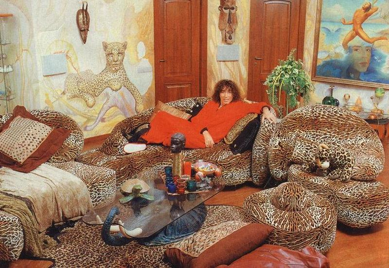

Об артисте
Вале́рий Я́ковлевич Лео́нтьев — советский и российский певец, композитор и актёр. Народный артист РФ, Заслуженный артист Украинской ССР. Лауреат Премии Ленинского комсомола. Обладатель премий World Music Awards, ZD Awards, Овация, Золотой Граммофон.
Карьера
9 апреля 1972 года во Дворце культуры шахтёров и строителей Воркуты состоялся первый сольный концерт Валерия Леонтьева. В этом же году он выиграл в Сыктывкаре региональный конкурс «Песня-72» (с песней «Карнавал на Севере»). Призом за победу в конкурсе было обучение в «Творческой мастерской эстрадного искусства Георгия Виноградова» в Москве. Однако учёбу певец не завершил и в 1973 году вернулся в Сыктывкар, где работал солистом в местной филармонии и стал солистом группы «Мечтатели», вскоре переименованной в «Эхо». С этим коллективом Валерий работает и по сей день.
В 1978 закончил заочное отделение Ленинградского института культуры. В 1979 году Валерий Леонтьев перешёл в Горьковскую филармонию с условием, что последняя отправит его на всесоюзный конкурс в Ялте. За исполнение 12-минутной баллады «Памяти гитариста» Давида Тухманова на стихи Роберта Рождественского Леонтьев получил первую премию в транслировавшемся на всю страну конкурсе. Далее продолжил сотрудничество с Тухмановым: «Ненаглядная сторона» на стихи Игоря Шаферана, «Там в сентябре» на стихи Леонида Дербенёва (впервые на телеэкране в программе «Музыкальный киоск») и др. Песня «Танцевальный час на солнце» Тухманова принесла Леонтьеву первую премию на фестивале «Золотой Орфей» (Болгария. 1980).
С 28 июля 1983 по 1995 годы работал в Ворошиловградской (ныне Луганской) филармонии солистом-вокалистом эстрадного жанра, художественным руководителем вокально-инструментального ансамбля «Эхо». Именно в этот период был удостоен премии Ленинского комсомола (1985), а в 1987 г. Валерию Леонтьеву присвоено звание заслуженного артиста Украинской ССР.
В 80-х годах начался период работы с Раймондом Паулсом, наиболее активный в 1984—1986 («Зеленый свет», «Гиподинамия», «Годы странствий», «Затмение сердца», «Исчезли солнечные дни» и др.), участие в программе Паулса «Святая к музыке любовь» в ГЦКЗ «Россия». Песня «Прощание с мамой» положила начало сотрудничеству с Лорой Квинт. Ежегодно готовились новые песенные программы, премьеры которых проходили в Ленинграде в концертном зале «Октябрьский», а с середины 80-х гт. в Москве в ГЦКЗ «Россия»: «Я просто певец» (1982), «Бегу по жизни» (1984), «Наедине со всеми» (1985), «Звездный сюжет» (1986), «Признание» (1987), «Мне кажется, что я ещё не жил» (1990) и др. Давняя мечта о театре привела Леонтьева к работе над рок-оперой. Благодаря его увлеченности и энергии в ГЦКЗ «Россия» состоялась премьера оперы «Джордано» (1988, муз. Квинт, ст. В. Кострова, реж. В. Дружинин), в которых Леонтьев исполнил три разноплановые роли: Джордано, Шута, Сатаны.
Молодой Валерий Леонтьев выбрал для себя образ «сияющий луч». Он носил белые узкие костюмы в стиле «Лихорадки субботним вечером», облегающие комбинезоны, серебряные скини, летящие блузы и обувь на каблуке. Для выступления на «Песне года-91» носил лосины цвета бордовый металлик и футболку в крупную сетку. Позже носил виниловые шорты и кожаные бандажи.
В ходе перестройки в 1987 году в Министерстве просвещения СССР рассматривалось участие Советского Союза в престижном европейском песенном конкурсе «Евровидение». Министр просвещения СССР Георгий Веселов предложил отправить Валерия Леонтьева. Однако идея Георгия Веселова не была поддержана в ЦК КПСС и Горбачёвым. Даже в Министерстве просвещения большинство было настроено на то, что СССР ещё не готов к столь радикальным шагам.
В 1991 году получил премию The World Music Awards как лучший исполнитель, лидер по продажам звуконосителей в СССР.
В 1997 году с композитором Ю. Чернавским записал в США альбомы «По дороге в Голливуд» и «Санта-Барбара». Тогда же в Голливуде был снят клип «По дороге в Голливуд», полностью сделанный американцами.
С 1992 по 1998 год работал с балетом Аллы Духовой «Тодес». С 1998 года работает со своим балетом «Опасные связи».
28 марта 1998 года в самом центре Москвы, недалеко от Кремля, прошла торжественная церемония закладки именной звезды Валерия Леонтьева на «Площади звёзд». В 2009 году именная звезда Леонтьева появилась на «Аллее звёзд» Славянского базара в Витебске.
В 1999 вышло приуроченное к 50-летию артиста шоу «Фотограф сновидений» (реж. Горнизов, художник Гримм), в котором широко использовались лазерные эффекты, экран, трюки с «улетающим» артистом. Проект принадлежал композитору Владимиру Евзерову, предложившему песни на стихи А. Блока, А. Ахматовой, М. Цветаевой, Р. Бернса.
Концерты
23 декабря - Алматы, Дворец Республики в 19:00.
25 декабря - Актау, Областной музыкально-драматический театр имени Нурмухана Жантурина в 19:00.
26 декабря - Уральск, ДК "Зенит" в 19:00.